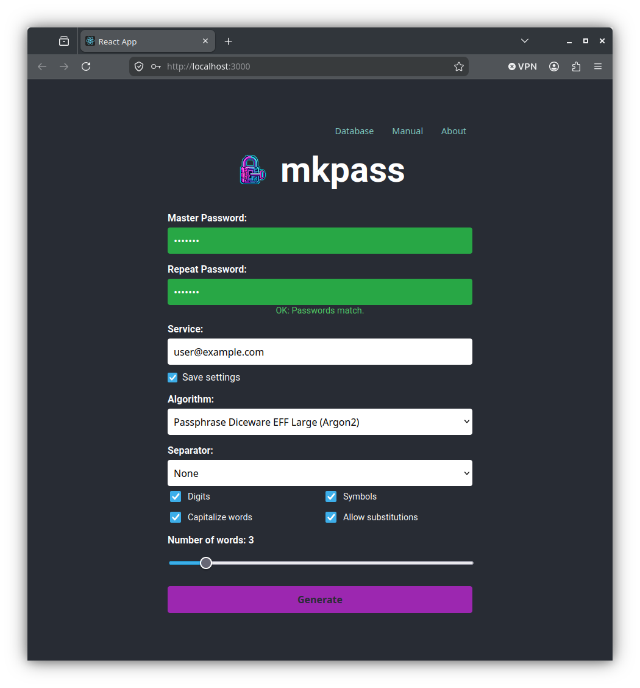
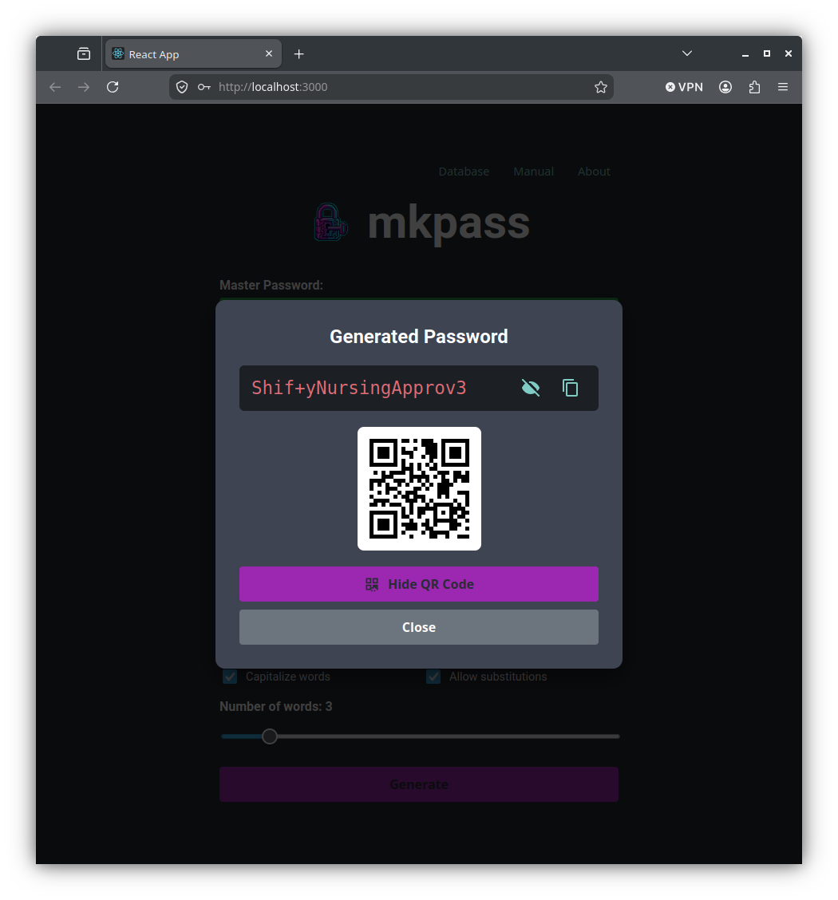
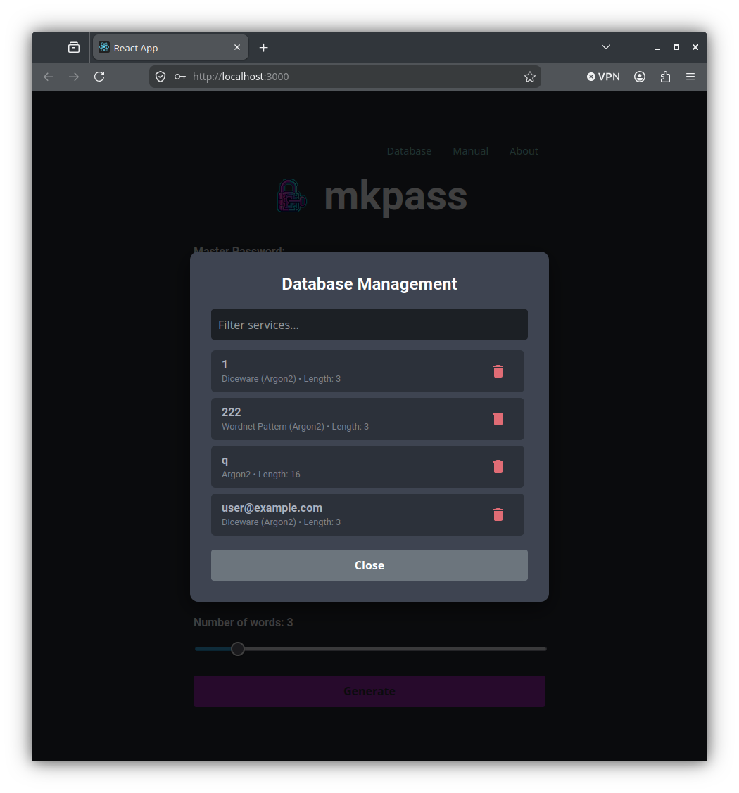

mkpass Web Version - User Manual
Welcome to mkpass Web, the browser-based client-side application for stateless password and passphrase generation.
🔒 Information Security & Privacy Guarantee
It is completely safe to use mkpass Web.
- 100% Client-Side WebAssembly Execution: All cryptographic key derivation (Argon2id, HMAC-SHA512, Diceware, WordNet pattern generation) occurs entirely inside your web browser using WebAssembly compiled directly from native C++ code.
- Zero Network Data Transmission: Your Master Password, Service Names, and derived passwords are NEVER sent over the network. No servers, APIs, analytics, or remote logging are contacted during generation.
- Offline Capable: Once the page is loaded, you can disconnect your internet connection completely or use the app offline—password generation will continue to work seamlessly.
- Memory Hygiene: Master password variables reside strictly in local WebAssembly browser memory allocations.
1. The Stateless Concept
Traditional password managers rely on encrypted cloud vaults or local database files. If a vault file is lost, corrupted, or hacked, access to all stored passwords is lost. mkpass Web operates statelessly:
- You only remember one secret: your Master Password.
- For any service (e.g.
github.com or my-email), mkpass derives the exact same strong password deterministically every time you enter your Master Password and service options.
- Service names and non-secret configuration parameters (algorithm, length, character set choices) are saved in your browser's local storage (
localStorage) strictly for auto-completion convenience.

mkpass Web browser interface with client-side generation controls
2. Web Application Features
⚡ Client-Side WebAssembly
Runs native-speed Argon2id and HMAC-SHA512 key derivation algorithms directly in browser memory.
🔍 Smart Autocomplete
Remembers non-secret service settings in browser localStorage for quick one-click regeneration.
📋 One-Click Copy
Instantly copy derived passwords to system clipboard with visual feedback.
📱 Responsive Design
Optimized for mobile web browsers, tablets, and desktop displays.
3. Operating Instructions
3.1 Generating a Password
- Open
mkpass Web in your browser.
- Enter your secret Master Password.
- Enter or select a Service Name (e.g.
github.com).
- Choose your generation algorithm:
Password (Argon2id) (Recommended modern default)Password (SHA512 HMAC)Passphrase (Diceware EFF Large)Passphrase (WordNet Pattern)
- Configure password length and character set preferences if needed.
- Click Generate Password.
- Click Copy to Clipboard to copy the generated password.

Generated password modal with QR code and clipboard copy button
3.2 Managing Browser Saved Profiles
- Click on the Stored Services / Database tab or menu.
- View all non-secret service profiles stored in your browser local storage.
- Click Delete next to any service profile to clear its saved options from browser history.

Web Database Management modal for viewing and deleting stored service preferences
4. Frequently Asked Questions (FAQ)
Is it safe to type my Master Password into a browser?
Yes. The Web version of mkpass executes 100% locally on your machine. You can verify this by opening browser developer tools (F12 -> Network tab) while generating a password: zero HTTP/HTTPS requests are made when generating passwords.
What happens if I clear my browser history/cookies?
Clearing browser data only removes saved non-secret service names and preference suggestions. It does NOT break password generation! Simply re-enter your Master Password, service name, and algorithm parameters to regenerate the exact same password.